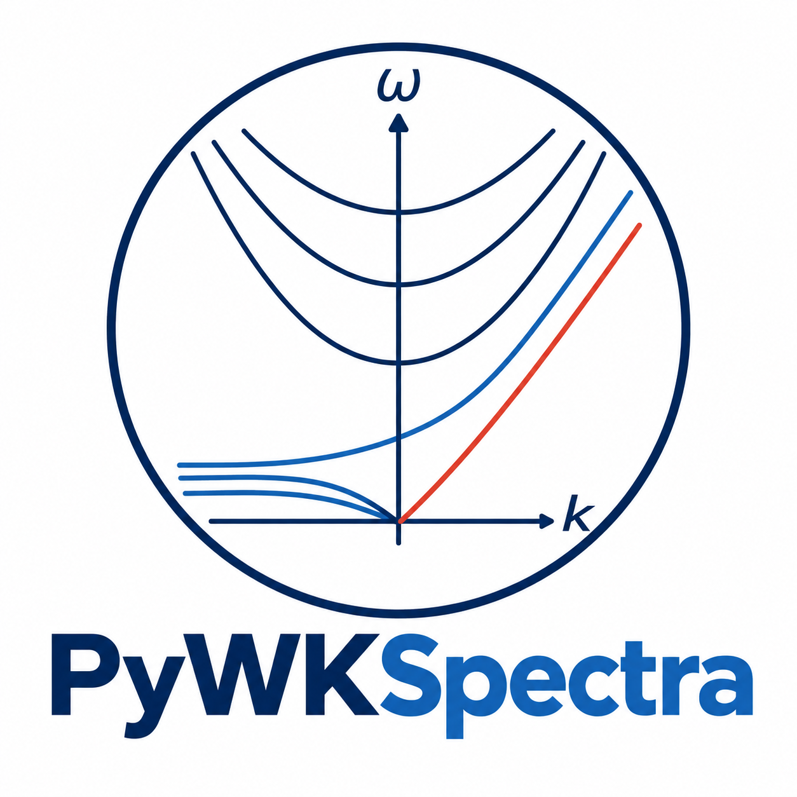

ACTIVE PROJECT · PYTHON
PyWKSpectra
An open-source Python package for Wheeler–Kiladis space–time spectral analysis of tropical atmospheric variability. PyWKSpectra provides tools for studying convectively coupled equatorial waves, including spectral diagnostics, visualization capabilities, and reproducible examples.